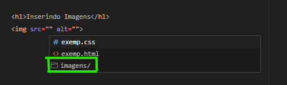
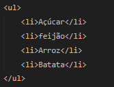

Estudos HTML
Aqui sera aplicado os conhecimentos sobre a linguagem de marcação de textos HTML(Hyper TextMarkup Language) que não é uma linguagem de programação mas uma liguagem que de marcação aonde é usada junto com mais duas uma de estilização o CSS e o JavaScript que essa sim é uma linguagem de programação pois ela da vida a página HTML gerando animações para a página.
Parágrafos
Para podermos escrever um parágrafo em um documento HTML é bem simples para isso vamos fazer o uso da tag <p></p> e adicionarmos o nosso paragrafo dentro do par de tags.
Símbolos
No HTML podemos adicionar símbolos especiais em nossa página como por exemplo as aspas que adicionamos para usar a tag <p>.Para podemos adicionarmos esses símbolos especiais chamados de HTML Entities para adicionalos basta usar os parâmetros abaixo.
Essa é uma tabela com os símbolos mais usados, se quisermos ter acesso a mais símbolos personalizados basta
Emojis
Aproveitando que estamos falando de símbolos personalizados podemos também adicionar emokis ao nosso site, assim como os símbolos personalizados os emojis em si possuem códigos unicode para poderem ser adicionados a uma página HTML.
Adicionando Emojis
Temos duas formas de adicionarmos um emoji em nossa página HTML, podemos simplesmente copiar o emoji e colar em nosso editor de código isso não vai impedir que o nosso emoji apareça em nossa página porém essa não é a melhor forma para se adicionar um emoji se o que você está procurando é se tornar um bom programador Front-end.E a segunda maneira de adicionarmos um emoji em nossa página é por meio do código dele,para isso vamos:
Primeiro vamos procurar o emoji de nossa escolha para podermos adicionar em nossa página.
Logo após escolhermos o emoji nós vamos nas informações técnicas dele e é ali que nos vamos pegar as informações que vamos precisar para podermos adicionar um emoji em nossa página.
Chegando aqui nós vamos pegar somente o código que aparece depôs do U+ para podermos adicionar nosso emoji,com esse código nos vamos no nosso editor de código e no lugar do U+ nós vamos estar colocando o código &#x e na frente adicionar o código que pegamos do nosso emoji,que no caso ficaria assim:
Gerando como resultado:
Direitos Autorais

Antes de aprendermos como procurar e adicionar imagens em nosso site precisamos ter noção de que no mundo que vivemos hoje em dia estamos muito indefesos com direitos autorais de criadores de conteúdo, e infelizmente uma foto é um tipo de arte que foi criada por alguém ou seja as imagens também possuem direitos autorais e por isso não podemos sair por ai colocando imagens em nosso site simplesmente por que achamos bonito.Então sabendo disso agora podemos ver como vamos escolher determinadas imagens da maneira correta para não podermos ser processados por terceiros, para podermos usarmos imagens como bem queremos temos quatro maneiras simples:
- Use o que você tem!Crie suas imagens ou use as imagens que o cliente possui isso é uma forma de evitar direitos autorais.
- Consiga uma autorização de acordo com a lei para poder fazer o uso de imagens de terceiros precisando de documentos que comprovem que você tem direito de usar a imagem.
- Compre o direito de usar a imagem somente se atentando as regras que podem determinar o tempo de uso da imagem ou a quantidade de vezes que você pode usar a imagem para seu próprio benefício.
- Use imagens de domínios públicos,pois essas imagens você pode usar avontade sem medo de ser processado por quebras de direitos autorais.
Encontrando Imagens
Existem vários sites que fornecem imagens de domínio público para que possam ser usados em seus projetos,porém nunca deixe de ler atentamente as regras para o uso dessas imagens pois algumas delas podem ser usadas somente se o nome do criador estiver creditado na imagem então tome cuidado.
Sites Públicos
Formatos de Imagens
JPEG
Existem vários formatos de imagens de variados tipos que possuem tanto vantagens quanto
desvantagens,porém vamos focar nos mais usados e compactos para criação de sites o
JPEG e PNG.
O JPEG é usado para gerar tamanhos de imagens extremamente reduzidos e também por câmeras
digitais modernas e programas de tratamento de imagens possuindo como grande vantagem o tamanho dos
arquivos que ocupam pouco espaço no disco.
PNG
O formato PNG surgiu em 1996 e foi desenvolvido pelo W3C com o objetivo de substituir o formato GIF,e também é compacto mas não tanto como o JPEG.

Sempre quando for escolher o formato de imagem para seu site sempre opte pelo formato JPEG com compactação entre 30% e 50% e use o formato PNG somente quando precisar de trânsparencia na foto.
Tamanhos de Imagens
Para ter uma boa imagem no seu site ela não precisa ser necessáriamente grande possuindo resolução de
1920x1080 por exemplo,mesmo que nesse caso a imagem seja boa ela pode ao mesmo tempo ser pesada
podendo gerar um arquivo de até 3mb o que geralmente pode ser prejudicial para o seu site gerando
lentidão na hora de carregar sua página.
O recomendado é que você gere imagens do tamanho certo para poder aplicar no seu site,pois modificar
o tamanho da imagem com códigos não vai fazer necessáriamente que a imagem no seu site vai ficar
mais leve,pelo contrário ela vai diminuir de tamanho mais mantendo o peso do arquivo na sua página.
Carregando Imagens
Para podermos inserir imagens em nosso site vamos fazer o uso da tag <img src="" alt=""> aonde dentro do sources nós vamos escolher a imagens que vamos adicionar em nossa página seja ela PNG ou JPEG,veja o exemplo a seguir:

Primeiro nos digitamos o código acima e em seguida escolhemos a nossa pasta aonde estão as nossas imagens.
Logo após escolhemos a imagem que vamos querer e em qual formato a imagem está,no meu caso eu peguei a png mesmo gerando assim a nossa imagem no nosso site:
Imagens Dinâmicas
Nós podemos também adicionar imagens que se adaptam de acordo com o tamanho da tela do seu aparelho independentede onde esteja acessando o site,e isso é bom para seu site pois quem acessá-lo não vai ter problemas com imagens quebradas por que seu site não possui este tipo de imagem!Dito isso,vamos por a mão na massa
Para podermos evitar esse corte de imagem e fazer com que ela fique acessivel a todos tipos de dispositivos sem que atrapalha a visualização das pessoas nos vamos precisar de algumas imagens e um software de edição de redimensionamento de imagens chamdo GIMP.
GIMP é um programa de edição e criação de imagens para Windows, Mac e Linux. Ele é uma boa alternativa gratuita ao Photoshop e conta com uma série de ferramentas e recursos, como pincéis e efeitos para fotografias. O editor ganhou interface única, permitindo ao usuário abrir várias janelas distintas.
Dinâmismo na prática
Com nossas imagens nos tamanhos certos e prontas para podermos usá-las agora vamos adicionar o código que vai fazer com que nossas imagens se auto alinhem automaticamente de acordo com o aparelho de acesso!Para isso vamos uasr a tag <picture></picture> contendo abertura e fechamento, e dentro dela vamos adicionar as configurações que vamos usar para que a imagem se adapte ao tamanho do aparelho:
Seguindo o código acima nós definimos uma class para a tag <picture> para podermos definirmos as configurações CSS para deixar nossas imagens mais bonitas e alinhadas, também adicionamos a tag <source> que usa como parâmetros o media=""(define a largura que vamos querer que quando o navegador alcançar,mostre a imagem que definirmos para ser exibida), tambémusa o parâmetro scrset=""(Define a imagem que vamos adicionar no site) e também o type=""(O formato do arquivo que vamos querer)png, jpeg,etc...Seguindo para as configurações das imagens nós definimos a nossa imagem que possui 1000px como a imagem principal e acima da imagem nós definimos que caso a imagem da tela alcance 1050px de largura o navegador deve mostrar a imagem cachorro-medio.png e seguindo a mesma linha de racíocinio se a largura da tela chegar a 750px o navegador deverá mostrar a imagem cachorrinho-triste.jpg que como você pode ver está usando um tipo de arquivo diferente o JPEG.
Como resultado
Diminua a tela para ver a mágica:
Imagens de Fundo
Podemos também adicionar imagens de fundo em um site,vejamos algumas formas de lidarmos com configurações de fundos!
Como mostra os quadros acima podemos ter três tipos de configurações de fundo,seja elas em uma caixa ou até mesmo no próprio site.Na primeira caixa foi definido um background-color usando como cor de fundo a cor darkcyan, na segunda caixa foi usado um background-image:linear gradient usando a cor red e blue juntas e na última adicionamos uma imagem de fundo usando a propriedade background-image:url que basta determinar o local aonde está a imagem que pretende colocar de fundo e adicioná-la.
Imagens Externas
Podemos também poder adicionar imagens externas de fundo em uma página HTML,para isso vamos fazer o uso da propriedade background-image:"url()" e adicionamos a nossa url externa aonde esta localizada a nossa imagem.
Como mostra o código acima,usamos a propriedade background-image:url('') e adicionamos o caminho htttps://gustavoguanabara.github.io/html-css/imagens/mascote.png que é a imagem do mascote do gustavo guanabara.
Por padrão da propriedade background-image:url repete a imagem adicionada no site,podemos usar uma outra propriedade para definirmos que apareça no site somente uma imagem,para isso vamos usar a propriedade background-repeat.
Usando a propriedade podemos ver que a imagem deixa de ser replicada e passa a ser somente uma imagem fixa de fundo na tela.
Posicionamento de Imagens
Ainda falando de imagens de fundo em uma página,agora vamos falar sobre posicionamento da imagem,e para isso vamos usar a propriedade background-position para podermos configurar as medidas que nossa imagem vai possuir.Veja o exemplo:
como mostra o exemplo acima,criamos três divs e com nomes de bloco e adicionamos id para cada um desses blocos para podermos adicionar a configuração especifica para cada imagem.Dentro desses ids configuramos o ângulo que essas imagens iriam ficar,resultando...
Tamanhos Imagem Fundo
Podemos adaptar as imagens de fundo em uma página independente do seu tamanho ou do conteúdo do site,para isso usaremos a propriedade background-size para determinarmos como a imagem vai se adaptar no nosso site!Veja:
Aqui nos adicionamos como configuração dentro do proprio body uma imagem de fundo e aplicamos a posição em que ela deveria estar no corpo da página, foi adicionado não repetição a página e definimos um background-size:cover que faz com que a imagem ocupe a tela inteira independente do dispositivo que esteja sendo acessada,gerando como resultado...
Fundo Fixo
Para podermos deixar nossa imagem de fundo fixa vamos usar a propriedade background-attatchment: fixed.Dentro dessa propriedade possuimos algumas outras como mostra o exemplo abaixo:
importante
Podemos ressaltar que podemos fazer o uso de shorthands neste desenvolvimento,para isso basta seguirmos a ordem de proscedência: Color > Image > Position > Repeat > Attachment.
Centralização Vertical de Caixas
Caso ainda não saiba,para podermos centralizar algo geralmente usamos a propriedade margin: auto; porém essa propriedade só pode ser usada para objetos com posições relativas,que é o que geralmente é usado por padrão, como pode ser visto no exemplo abaixo:
Videos
Para podermos inserirmos vídeos em nosso site podemos fazer o uso da nova tag liberada no HTML5,a tag <video>.E antes de colocarmos o video no nosso site tem uma informação importante sobre compatibilidade que temos que saber.No caso se o navegador que alguma pessoa que está acessando o seu site não possuir compatibilidade com o formato do vídeo,temos uma forma de resolver isso para que a pessoa não tenha problemas de visualização no seu site!
Formatos de Vídeos
Nós possuimos vários formatos de vídeos porém os mais importantes são o (MPEG, WEBM e OGG), porém os mais usados são os dois primeiros.
Implementando Vídeo
Como podemos ver nos adicionamos a nossa tag video e adicionamos três sources na primeira linha nos adicionamos o nosso video principal que é o que vai comandar a página,e os outros dois sources servem para o equilibrio entre navegadores para caso a pessoa que esteja acessando o site de um navegador que não tenha compatibilidade por exemplo com o formato MP4 mas possua compatibilidade como webm por exemplo,vai continuar mantendo o vídeo aparecendo no site,o mesmo serve para o ogg.Ai se por um acaso acontece de que a o navegador da pessoa não possua compatibilidade com os formatos descritos na configuração do site,apareceria a frase de aviso que está logo abaixo da tag video na imagem acima.
Configurações Tag
Na tag vídeo podemos adicionar algumas configurações que vão desde os controles de vídeo até uma capa personalizada para poder deixar na imagem antes de dar o play,são essas configurações:
- Poster- Configura um espaço para que você possa armazenar uma imagem como capa antes de iniciar o vídeo.
- Controls- Quando você adiciona o vídeo no seu site ele por padrão não vem os botões de de controle,o parâmetro controls vai gerar esses botões para que a pessoa possa acessar o vídeo.
- Autoplay- O autoplay vai dizer para o navegador começar o vídeo automaticamente quando a página for reiniciada.
Resultado vídeo implementado!
Hospedagem Vídeos
Usar vídeos hospedados em seu proprio servidor pode nos gerar muitos problemas como alto consumo de banda,deixar nosso site lento e gerar incompatibilidades com alguns navegadores por conta dos codecs.Para podermos resolver isso vamos usar duas plataformas,ou o Youtube ou o Vímeo.
O youtube é o serviço de hospedagem de vídeos mais popular no mundo e é gerenciado pelo google,tendo como principal vantagem servidores rápidos,porém a ideia do google de deixar todos os vídeos públicos e dísponiveis podem gerar dor de cabeça se você quer limitar para algum tipo de pessoas específicas para poder acessar o seus vídeos.
Como segunda opção temos o vímeo para resolover o problema que apontamos anteriormente,no caso ele permite limitar que tipo de pessoa vai ver o vídeo que você vai colocar no seu site,forma importante para quem quer criar conteúdos de vídeos para usar profissionalmente,a unica desvantagem do vímeo é que ele é pago por uma taxa anual e não possui algorítimos tão bons quanto os do youtube possuindo pequenos travamentos nos vídeos as vezes!
Incorporando Vídeos
O próprio vimeo ou youtube te dão os códigos prontos para adicionar ao seu editor de códigos para adicionar vídeos externos em sua página,para isso basta:
Ir em qualquer vídeo no youtube e clicar em compartilhar.
Clicar na opção incorporar.
clicando em incorporar vai aparecer um código com algumas configurações personalizadas aonde se você quiser você pode mudar,mas caso queirao o vídeo do jeito que estiver basta copiar o código e colar no seu editor,que o vídeo já estará la no seu site!Evitando lentidões no seu site por estar hospedado em outro servidor e deixando ele mais leve.
Áudios
Com o HTML5 veio a facilidade em compartilhar audio em sites sem depender necessáriamente do JavaScript ou plugins,para podermos adicionar audios em um site basta usarmos a tag <audio> junto com alguns sources para que seu site seja capaz de reproduzir qualquer áudio.

➡O atributo preload informa se o áudio será pré-carregado ou não,e aceita três valores:
- metadata: Que tem como objetivo carregar as informações sobre o arquivo(tamanho, tempo, informações de direitos, etc...)
- none: O none não mostra nenhuma informação até que o usuário clique no play ou um script inicie a reprodução
- auto: O auto vai fazer o papel de carregar o audio assim que o navegador recarregar a página,mesmo que o usuário não aperte o play
➡o atributo loop terá o papel de reiniciar o audio toda vez que chegar ao fim.
É importante destacar que dentro da tag <audio> adicionamos vários sources porém você ja deve saber que se deve colocar o arquivo padrão de audio do navegador que estiver usando, e nos demais coloca outros tipos de arquivos caso o principal não possua compatibilidade com o navegador de uso pois isso resolverá o problema e o site não deixara de mostrar o áudio colocado.
Favoritos(Favicons)
Você ja viu aquelas imagens que ficam do lado do titulo das páginas no seu navegador,aquelas são as favicons que indentificam a página que você está acessando no seu navegador,são exemplos de favicons:


Para poder adicionar favicons no seu site é preciso ter o arquivo do ícone que geralmente está no formato ICO,caso não saiba como baixar basta cessar o site IconArchive ou o Favicon.io podendo baixar um pacote com vários ícones diferentes.Geralmente vem compactado em arquivo zip,extraia ele e jogue na pasta principal para poder usá-lo.
Adicionando Favicon
Para podermos implementar nossa favicon no nosso site é bem simples!
Adicionamos o link no nosso cabeçalho com todas as configurações para mostrar que é uma favicon e adicionamos o nosso favicon.
Ficando do lado do nosso título da página dando uma capa para o nosso site,deixando assim mais bonito e organizado.
Trabalhando com Listas
Listas Ordenadas
Listas ordenadas chamdas de ordered lists são listas aonde a ordem dos intens é muito importante e para criá-las vamos usar a tag <ol> seguido da tag <li> que é um indentificador de cada item da lista.

Resultando:
A tag <ol> possui algumas configurações do tipo de marcador que podemos usar nos nossos itens,seguindo as instruções abaixo:
- 1-Cria listas enumeradas.
- A-Cria listas alfabéticas usando maíusculas.
- a-Cria listas alfabéticas minúsculas.
- I-Cria listas usando algarismos romanos maiúsuclos.
- i-Cria listas em algarismos romanos minusculos.
Listas Não Ordenadas
da mesma maneira que temos as listas ordenadas nós temos também as listas não ordenadas chamadas também de unordered lists que são aquelas aonde a ordem do item não influência no resultado da lista, sendo uma boa opção para somente organizar itens que não precisam necessáriamente de uma ordem prévia.Para podermos criar a lista nós vamos usar a mesma maneira das listas ordenadas mudando somente a tag <ol> pela tag <ul>,veja o exemplo:
Por padrão a unordered Lists possui como símbolo o circle,porém temos mais outros dois para modificarmos como configuração,veja:
- disc-Padrão bola preta totalmente pintada.
- circle-Bola com borda sem preenchimento.
- square-Pequeno quadrado totalmente pintado.
Listas Mistas
Podemos fazer o uso das listas configurando as listas dentro delas mesmas:
Listas de Definições
Listas de definições são como dicionários aonde temos termos com descrições sendo uma lista sem demarcadores mas útil em alguns casos.Uma lista de definições é usado usando a tag <dl>(Definition List) contendo a tag <dt>(Defition Term) e uma descrição determinada pela tag <dd>(Definition Description),veja um exemplo a seguir:
Links
Os links são muito importantes para páginas web,pois eles te redirecoinam para outras páginas que tem ligação com a sua facilitando para que a pessoa chegue na página de interesse sem precisar de muito esforço.Para adicionar links em nossa página nós vamos fazer o uso das âncoras através da tag <a> que usa um href="" que cria uma referência de hipertexto,vejamos o exemplo:
Nós definimos no href o link que queriamos adicionar em nossa página e usamos o a como âncora no final da tag para podermos definir como nosso link iria aparecer na nossa página,que no caso ficou como cursoemvideo.com.
Porém esta forma tem so um problema,ela redireciona o nosso cliente para o determinado site que deixamos na nossa página so que fechando totalmente nossa página fazendo com que o cliente perca o vínculo com nossa página,para resolvermos isso podemos adicionar uma confiuração no nosso link fazendo com que quando o nosso cliente clicar no link ele é redirecionado para a página externa porém em uma nova aba,veja :
Adicionando como configuração o target="_blank" você diz para o navegador que ao clicar no link sera aberto uma nova página,mantendo assim a sua!
Definições
Podemos definir a natureza do link que estamos colocando em nossa página usando o atributo rel,atributo esse que aceita vários valores como por exemplo:
- Next-Link para próxima parte do documento.
- prev-Link para parte anterior do documento.
- author-Link para o site do autor do artigo.
- external-Link para site externo.
- nofollow iLink para sites não endosado(pagos).
Downloads
Para podermos adicionar a opção de downloads em links nós usaremos o parâmetro download="nomedownload" e adicionamos um tipo usando o parâmetro type="aplication/pdf".Esse é só um dos variados tipos que temos para downloads,vejamos:
- application/zip
- text/html
- text/css
- text/javascript
- video/mp4
- video/h264
- video/JPEG
- audio/aac
- audio/mpeg
- font/ttf
- image/jpeg
- image/png